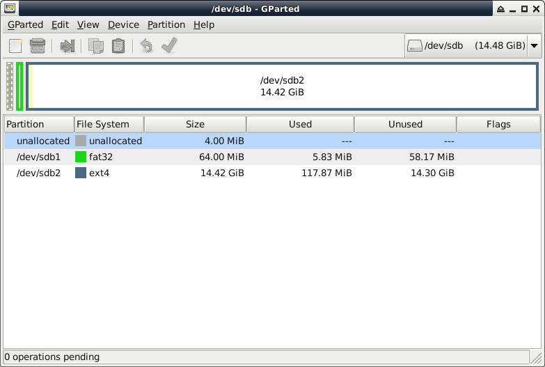

參考資料：
https://whycan.com/t_9231.html
https://github.com/szemzoa/awboot
https://bbs.aw-ol.com/topic/2338/mangopi-dual-t113-%E4%B8%BB%E7%BA%BF%E5%86%85%E6%A0%B8%E7%BC%96%E8%AF%91%E8%AE%B0%E5%BD%95
Micro SD：

$ cd $ git clone https://github.com/szemzoa/awboot $ cd awboot $ make $ sudo dd if=awboot-boot-sd.bin of=/dev/sdX bs=1024 seek=8 $ cd $ git clone https://github.com/Evlers/linux_kernel_t113 $ cd linux_kernel_t113 $ make mangopi_dual_t113_defconfig $ make zImage dtbs modules -j4 $ cp arch/arm/boot/zImage /xxx $ cp arch/arm/boot/dts/sun8i-t113-mangopi-dual.dtb /xxx